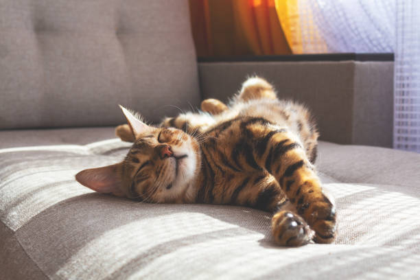

Mr. K

Age: 8 months
Race: British shorthair kitten
Personality: Mr. K is a cute kitten, but extremely smart and funny. He loves cuddles and plays with toys.
Authors: Marie, Lea, Dana and Elena
Date: 17 September 2026
Our client Purr & Pour is an imaginary cat cafe dedicated to animal rights and mental health. Our website is not only to promote adoption of animals in a world with too many strays, but also a goal to help people who feel alone to find a place to meet fellow cat lovers with similar interests. Not only is it a meeting place for all but also a great café that focuses on locally sourced, organic food and drinks to support the local farms and the rising climate issues. Our goal for our client is to help get the word out so that more people visit this wonderful café that is trying to make a wonderful change in this world.
Why are we doing this? Studies show that interacting with cats can lower stress hormones, boost mood, and reduce everyday stress. We wanted to combine the comfort of good food with the company of friendly cats, creating a space for everyone from young children to elderly guests. Whether you already love cats or aren't sure yet, our café offers a relaxed, welcoming environment to find out. All our cats are vaccinated and used to people, and guest safety and comfort always come first. We also care about quality, using ingredients sourced from local farms whenever possible. These goals shape the website directly: the "Meet the Cats" page lets visitors get familiar with each cat's personality before their visit, helping nervous or first-time guests feel at ease; a safety and house-rules section reassures parents and cat-shy visitors that the environment is controlled and welcoming; and our menu page highlights the local farms behind our ingredients, reflecting our commitment to quality.
Age: 8 months
Race: British shorthair kitten
Personality: Mr. K is a cute kitten, but extremely smart and funny. He loves cuddles and plays with toys.

Age: 3 years
Race: Bengal cat
Personality: Simba is a male cat who was rescued in Portugal. He is a bit shy at first, but once he gets to know you, he loves getting petted. Simba spends most of his day sleeping.
Age: 5 Years
Race: Siberian cat
Personality

Age: 7
Race: Scottish fold
Personality: Toffee is a big sleepy head. He loves to eat all different kinds of food, and likes to take care of everyone. You will win his heart by feeding him food, but watch out — he will snatch your food if he has the chance.
Age: 5 Years
Race: Siberian cat
Personality
Age:
Race:
Personality
Age:
Race:
Personality
The websites main audience will be those who are interested in cats and likes to visit cafes. Other audiences can be those who would like to adopt or meet a cat, or someone who just wants to enjoy a good cup of coffee. The cafe is a excellent place to sit down, relax and sip on a delicious cup of coffee, while getting the chance to meet, pet and take pictures of cute cats.
This section will contain information about the inspiration behind the cafe. It will contain subsections with information about the issue with too many stray cats, global warming and locally sourced food, mental health for people who might feel lonely and needs an arena to meet new people. The profits from the cat food sold in the cafe gets donated to WWF. Also on this side of the page there will be information about the current state of the world and why the café is trying to make changes.
We will have a section which contains the menu of the cafe. The menu will be divided into foods and drinks. This will make it easier for the guests to order food and drinks. When it’s easy to navigate through the menu it can be more tempting for the costumers to order through the website, this will also help the staff of the cafe because they don’t need one staffmember to always take orders in the register. Under the edible food and drinks you can find a section with cat food, where you can buy cat food and treats for the cat, so you can feed them.
This section will include contactinformation:
Phone number
Social media: instagram, facebook
They will also have a “work here?” section where users can email “Purr & Pour” with their CV and work application.
The last section will be donations, where users can choice to donate and support the cats or wwf.
Our client would like the website to have a clean look with colors that represent the message they are trying to send. Soft colors with greens and blues to represent the planet and rounded features. The client would also like a page of the website to include profiles of all the cats in the cafe that are up for adoption, with a form that can be filled out for those looking to adopt.
The website shall provide information about each cat, including their name, age, breed and personality.
The website shall provide a menu where users can view the food, drinks and cat food offered by the café.
The website shall provide contact information and allow users to find information about donations and job opportunities.
The website should be easy to navigate, allowing users to find the main sections within three clicks or less.
The website should be responsive and usable on both desktop and mobile devices.
The website should use readable text, appropriate image sizes and a consistent visual style across all pages.
As this is a school project with no budget for a domain or hosting, the website will be published for free via GitHub Pages. This provides a functional, publicly accessible web address at no cost, and is sufficient for the purposes of this project.
Since we don’t have much experience with git we expect to run into some problems there. We also have a lot of pictures, which can make the website run slower, something we don’t want to. The longer time users have to wait for the webpage to load, the bigger the chances they leave before it has loaded completely.